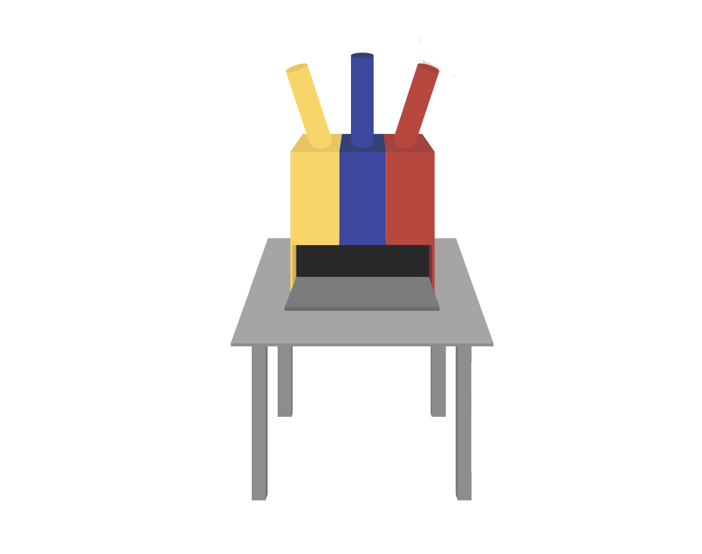
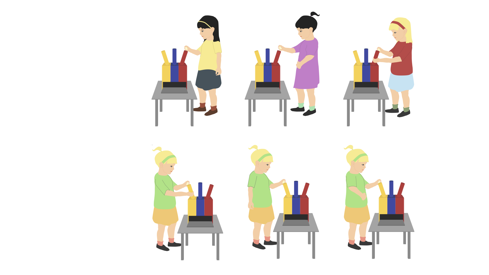
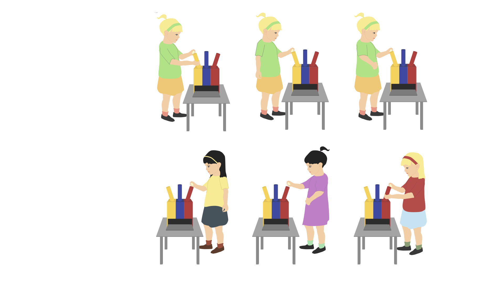
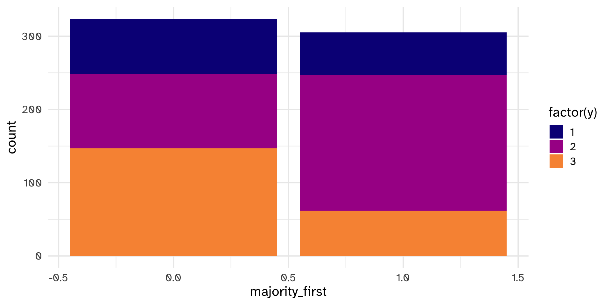
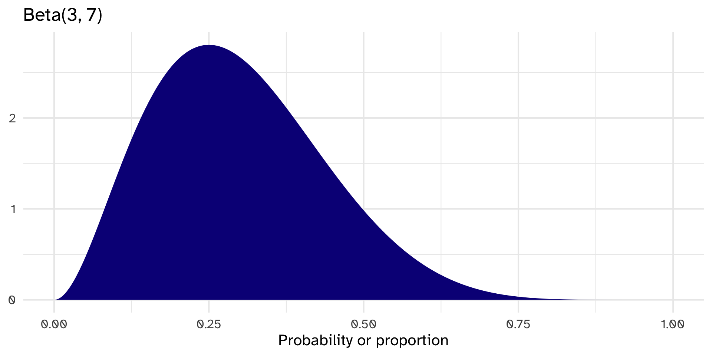
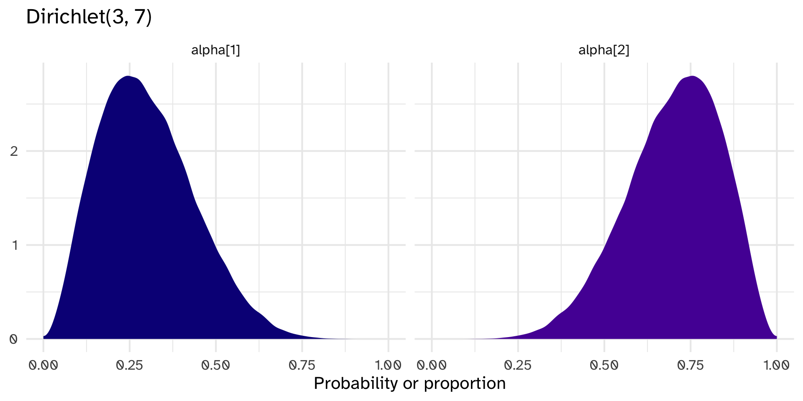
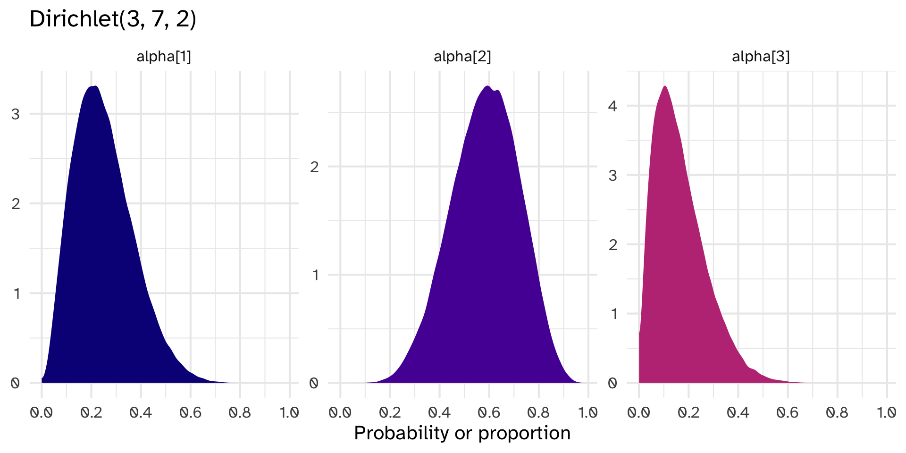
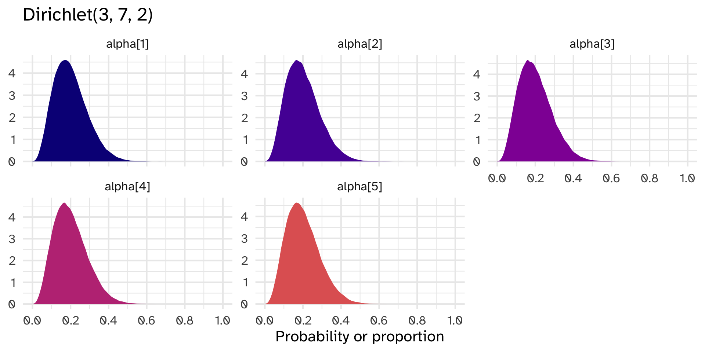

# A tibble: 629 × 5
y gender age majority_first culture
<dbl> <dbl> <dbl> <dbl> <dbl>
1 1 1 6 0 2
2 3 1 8 0 2
3 2 2 8 1 2
4 1 1 6 0 2
5 2 1 5 1 2
6 2 2 7 1 2
7 2 2 6 0 2
8 1 1 6 1 2
9 3 1 8 0 2
10 2 1 5 1 2
# ℹ 619 more rowsDirichlet Distribution + Case Study
Day 23
Prof Amanda Luby
Carleton College
Stat 340 - Fall 2025
Motivating example: Inferring a child’s strategy from the choice that they made


Majority First
Minority First
Data generating process vs GLM
Observable (choice) seems correlated with majority_first, but is unobservable (strategy)?
1 = “unchosen”, 2 = “majority”, 3 = “minority”
Model setup
Y: 1 = “unchosen”, 2 = “majority”, 3 = “minority”
5 different strategies:
- Majority
- Minority
- Maverick (choose the one that nobody chose)
- Random
- Follow first: copy the color that was demonstrated first
Know probabilities within each strategy:
- If Majority strategy, \(P(Y=2) = 1\)
- If Minority strategy, \(P(Y=3) = 1\)
- If Maverick strategy, \(P(Y=1) = 1\)
- If Random strategy, \[P(Y=1) = P(Y=2) = P(Y=3) = 1/3\]
- If “follow first” strategy, let \(X=x\) be the tube picked first. \(P(Y=y) = 1\) for \(y=x\).
Model setup
\[Y_i \sim \text{Categorical}(\theta)\]
Where \(\theta\) is a vector of probabilities for each outcome \(Y\).
We’ve just talked through all possibilities for \(P(Y|S=s)\), where \(S\) indicates one of the strategies. There is also some probability for each of the strategies, \(p_s\).
Then, \(\theta_i = P(Y_i) = \sum_{s=1}^5 p_s P(Y_i | S=s)\)
Prior for \(p_s\)?
Beta distribution
10 Random Draws from Dirichlet(3,7)
1 2 total
1 0.1908882 0.8091118 1
2 0.2728575 0.7271425 1
3 0.7295211 0.2704789 1
4 0.2725396 0.7274604 1
5 0.2620264 0.7379736 1
6 0.4134384 0.5865616 1
7 0.1594910 0.8405090 1
8 0.3100098 0.6899902 1
9 0.5744486 0.4255514 1
10 0.4848761 0.5151239 1Dirichlet(3,7) = [Beta(3,7), Beta(7,3)]
Dirichlet is multivariate Beta
Random draws from Dirichlet(3, 7, 2):
Random draws from Dirichlet(3, 7, 2, 2, 9, 1):
1 2 3 4 5 6 total
1 0.12074238 0.2805766 0.05186538 0.05819175 0.4791264 0.009497429 1
2 0.13002591 0.3788208 0.12850388 0.11097203 0.2360018 0.015675563 1
3 0.03178582 0.3585516 0.05868408 0.05437978 0.2996539 0.196944769 1Dirichlet(3, 7, 2)
Columns are correlated with each other

Dirichlet distribution
Let \(\vec{\theta} = (\theta_1, ... \theta_k)\) be a random vector of length \(K \ge 2\), where each element \(\theta_i > 0\) and \(\sum \theta_i = 1\). The Dirichlet model with concentration parameter \(\vec{\alpha} = (\alpha_1, ..., \alpha_k)\) is:
\[\vec{\theta} \sim \text{Dirichlet}(\vec{\alpha})\]
\[f(\vec{\theta}) = \frac{1}{B(\vec{\alpha})} \prod_{i=1}^K \theta_i^{\alpha_i - 1}\]
where \(B(\vec{\alpha})\) is the multivariate Beta function \(B(\vec{\alpha}) = \frac{\prod \Gamma(\alpha_i)}{\Gamma(\alpha_0)}\) and \(\alpha_0 = \sum \alpha_i\).
When \(k=2\), the Dirichlet distribution simplifies to the Beta(\(\alpha_1, \alpha_2\)).
Dirichlet distribution is conjugate for categorical/multinomial distribution
\[p \sim \text{Dirichlet}(\alpha_1, \alpha_2, ..., \alpha_k)\]
\[Y | p \sim \text{Categorical}(p)\text{ or Multinomial}(p)\]
and let \(c_i\) be the number of occurrences of category \(i\) in \(Y\). Then:
\[p | Y \sim \text{Dirichlet}(c_1 + \alpha_1, c_2 + \alpha_2, ..., c_k + \alpha_k)\]
Prior: \(p_s \sim Dirichlet(4, 4, 4, 4, 4)\)
Stan Model for Strategies
Boxes_model <- "data{
int N;
int y[N];
int majority_first[N];
}
parameters{
simplex[5] p;
}
model{
vector[5] phi;
// prior
p ~ dirichlet( rep_vector(4,5) );
// probability of data
for ( i in 1:N ) {
if ( y[i]==2 ) phi[1]=1; else phi[1]=0; // majority
if ( y[i]==3 ) phi[2]=1; else phi[2]=0; // minority
if ( y[i]==1 ) phi[3]=1; else phi[3]=0; // maverick
phi[4]=1.0/3.0; // random
if ( majority_first[i]==1 ) // follow first
if ( y[i]==2 ) phi[5]=1; else phi[5]=0;
else
if ( y[i]==3 ) phi[5]=1; else phi[5]=0;
// compute log( p_s * Pr(y_i|s )
for ( j in 1:5 ) phi[j] = log(p[j]) + log(phi[j]);
// compute average log-probability of y_i
target += log_sum_exp( phi );
}
}"Fit the model
Diagnostics

Social conformity